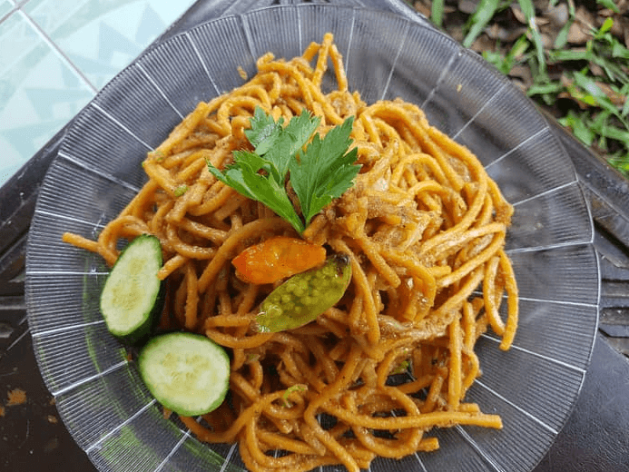
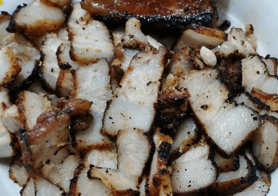
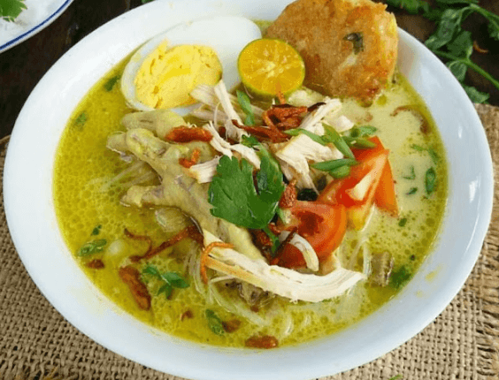
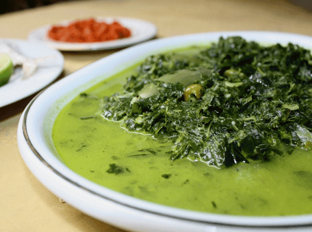
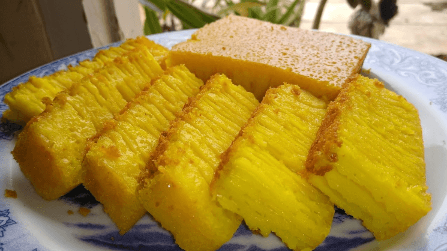
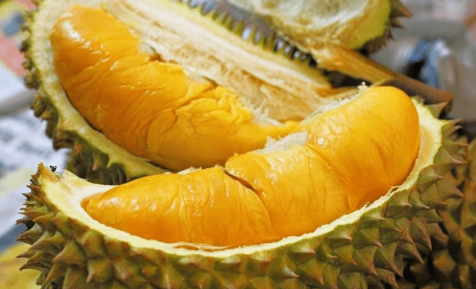
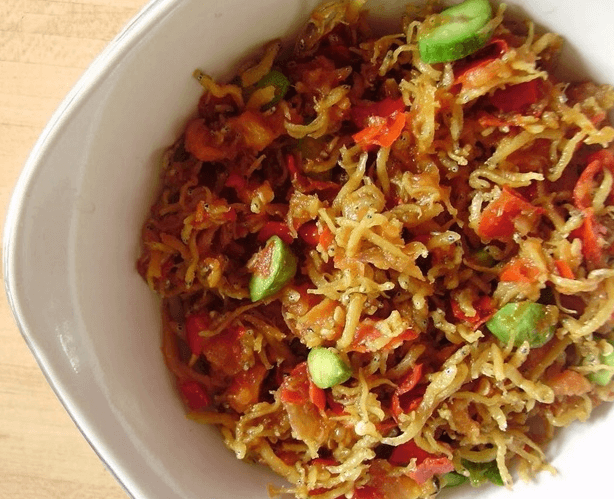

Sejarah

Sejarah Medan berawal dari sebuah kampung yang didirikan oleh Guru Patimpus di pertemuan Sungai Deli dan Sungai Babura.
Hari jadi Kota Medan ditetapkan pada 1 Juli 1590. Selanjutnya pada tahun 1632, Medan dijadikan pusat pemerintahan Kesultanan Deli, sebuah kerajaan Melayu.
Bangsa Eropa mulai menemukan Medan sejak kedatangan John Anderson dari Inggris pada tahun 1823. Peradaban di Medan terus berkembang hingga
Pemerintah Hindia Belanda memberikan status kota pada 1 April 1909 dan menjadikannya pusat pemerintahan Karesidenan Sumatra Timur. Memasuki abad ke-20,
Medan menjadi kota yang penting di luar Jawa, terutama setelah pemerintah kolonial membuka perusahaan perkebunan secara besar-besaran.
Geografis

Kota Medan memiliki luas 26.510 hektare (265,10 km2) atau 3,6% dari keseluruhan wilayah Sumatra Utara.
Dengan demikian, dibandingkan dengan kota/kabupaten lainya, Medan memiliki luas wilayah yang relatif kecil dengan jumlah penduduk yang relatif besar.
Secara geografis kota Medan terletak pada 3° 30' - 3° 43' Lintang Utara dan 98° 35' - 98° 44' Bujur Timur.
Untuk itu topografi kota Medan cenderung miring ke utara dan berada pada ketinggian 2,5 - 37,5 meter di atas permukaan laut.
Wisata Kuliner
Merdeka Walk, pusat jajanan 24 jam yang terletak di Lapangan Merdeka Medan dan tepat berada di seberang Balai Kota Lama Medan.
Kuliner Pagaruyung, masakan India dan Indonesia di daerah "Kampung Keling" ("Kampung Madras").
Medan Night Market by Fun Taste Street, terletak di Jalan Adam Malik Medan.
Ucok Durian, Durian Sibolang.
Restoran Tip Top, Restoran yang dibangun pada zaman kolonial Belanda, terletak di Kesawan.
Asia Mega Mas Food Court Centre. Terletak di Kompleks Asia Mega Mas Medan.
Makanan Khas Medan







Lontong Medan
Mie Gomak
Babi Panggang Kar
Saksang
Mie Aceh Medan
Soto Medan
Daun Ubi Tumbuk
Bika Ambon
Durian
Ikan Teri Medan
Kue Ombus-ombus